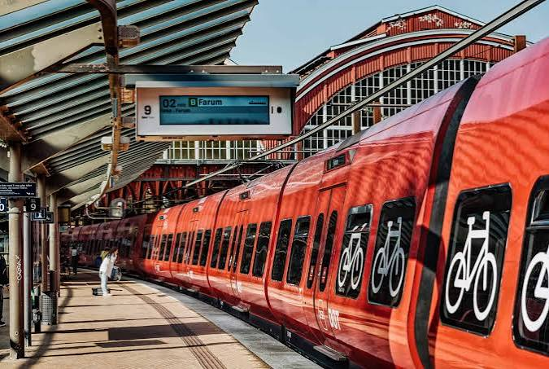

CityLoop Quest Copenhague


Le vélo est un moyen de transport ordinaire à Copenhague, pas une attraction. Les pistes sont souvent séparées du trottoir et de la chaussée, avec leur propre niveau et leurs feux. Aux heures de pointe, le flux peut être rapide. Gardez une trajectoire stable, signalez avec la main avant de tourner ou de vous arrêter et ne marchez jamais sur une piste cyclable en pensant qu’elle ressemble à un morceau de trottoir.
Le métro fonctionne jour et nuit, avec une fréquence réduite la nuit. Les lignes M1 et M2 relient notamment le centre, Amager et l’aéroport ; la Cityringen M3 forme une boucle autour des quartiers centraux, tandis que M4 dessert Nordhavn et Sydhavn. Trains S-tog et bus complètent le réseau. Les billets sont zonaux et valables sur plusieurs modes pendant une durée déterminée.
Une carte bancaire ou l’application officielle permet d’acheter des titres, mais il faut valider la bonne zone avant le trajet. Le Copenhagen Card peut être rentable pour une journée chargée en musées et transports ; il l’est moins pour une promenade principalement gratuite. Les contrôles sont fréquents et l’absence de billet entraîne une amende élevée.
Les bateaux-bus jaunes font partie du réseau public et offrent une traversée utile du port. Ils desservent notamment la Bibliothèque royale, Nyhavn, l’Opéra et Refshaleøen. Les ponts piétons et cyclables ont raccourci de nombreux trajets, mais leur ouverture pour les navires peut imposer une attente ponctuelle.
Le centre se parcourt très bien à pied. Les pavés, ponts et longues distances du grand parcours exigent toutefois de bonnes chaussures. Les taxis sont fiables mais coûteux ; le covoiturage et les vélos en libre-service varient selon les opérateurs. Pour une excursion vers Roskilde, Helsingør ou Hillerød, le train reste généralement plus simple que la voiture.